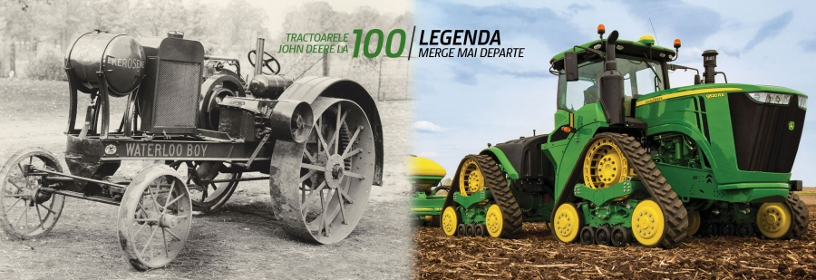
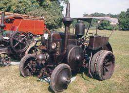
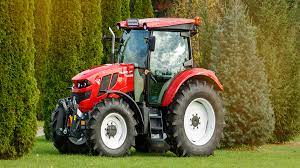

Istoria tractoarelor
Originea cuvantului tractor vine din limba latina („tractare”, „a trage”). Primul tractor a fost cu aburi, iar de-a lungul timpului a fost perfectionat si folosit in agricultura, constructii, si multe alte domenii.
Pentu a vedea mai multe detalii legate de apartitia si fabricatia tractoarelor, puteti afla accesand adresa aceasta.
In imaginea atasata puteti vedea evolutia tractoarelor, de la primul model scos acum cateva sute de ani si nivelul la care s-a ajuns acum.
De aceasta evolutia avem parte si in Romania
 | Numele | Tara | Anul |
|---|---|---|
| Fendt | Germania | 1989 |
| Massey Ferguson | Anglia | 1975 |
| Ford | SUA | 1965 |
Componentele principale ale unui tractor sunt motorul, cutia, rezervorul si cabina.
Pentru a vizualiza toata componentele unui tractor, aceseaza site-ul de componente
Locurile unde sunt utilizate tractoarele:
- Agricultura
- Defrisari forestiere
- Ferme si zootehnie
- Transportul altor utilaje
- Dezapezirea strazilor